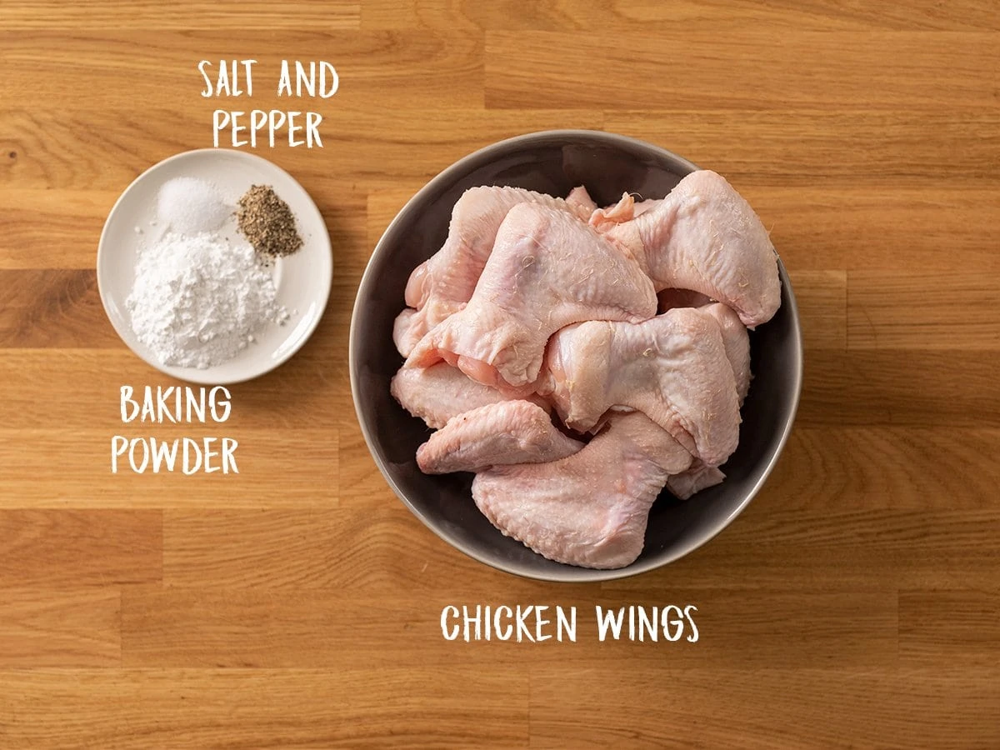
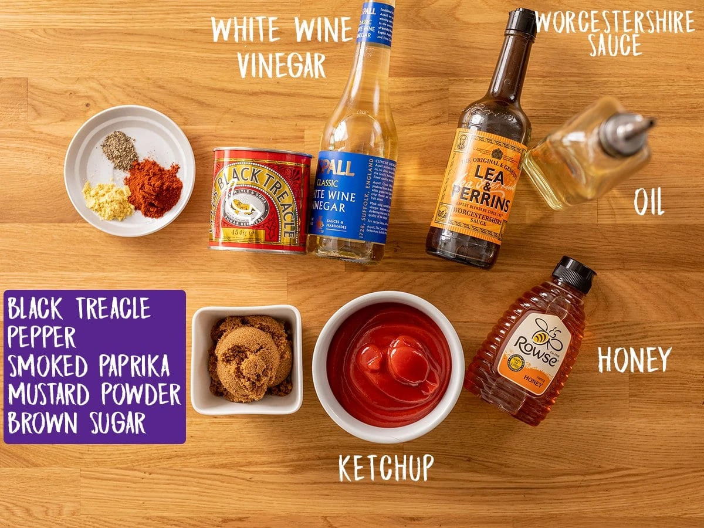
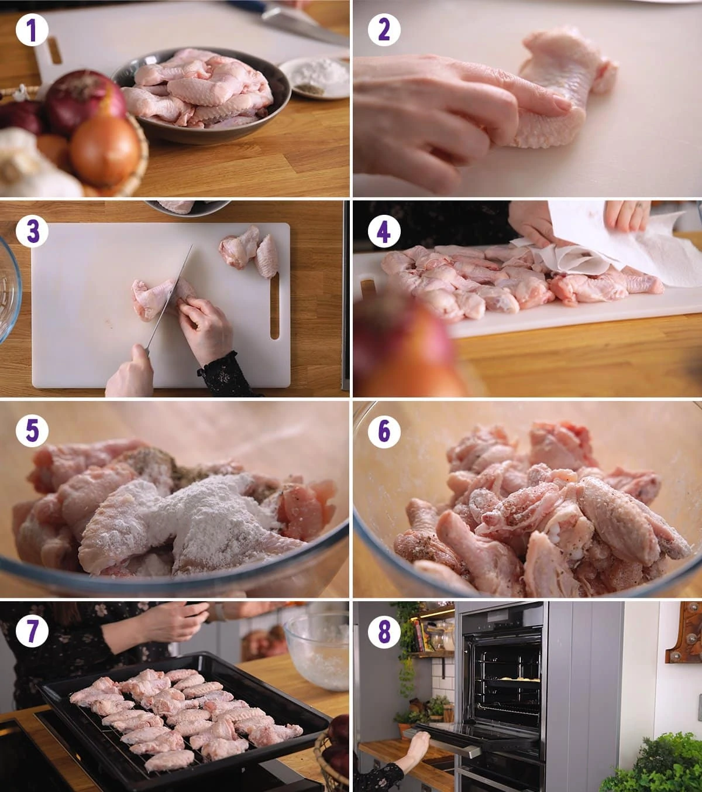
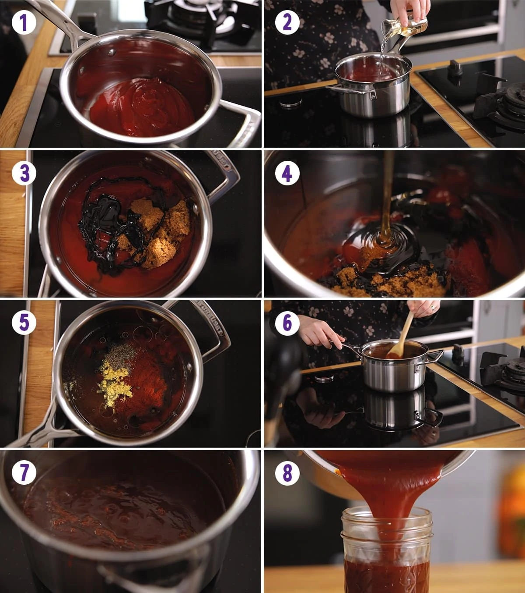
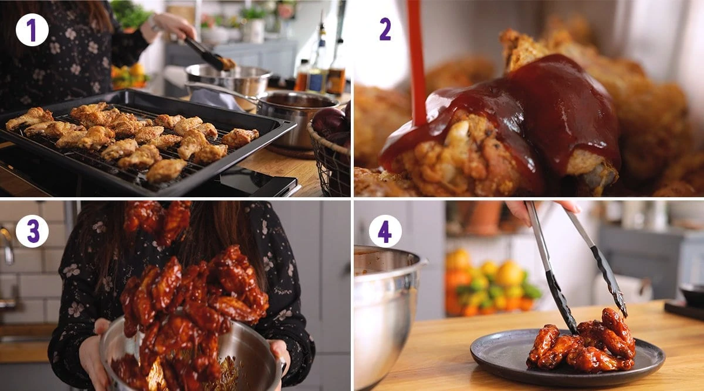

BBQ Chicken Wings Recipe

Why make BBQ Chicken Wings?
Ingredients
The following ingredients will make around 10 full wings (drum and flat) to feed 4 people.


Ingredients for the wings
- 1kg Chicken wings
- 2 tbsp baking powder
- 1/2 tsp sea salt
- 1/2 tsp ground pepper
Ingredients for the Sauce
- 200ml tomato ketchup
- 4 tbsp white wine vinegar
- 5tbsp dark brown sugar
- 3 tbsp honey
- 2 tbsp oil
- 1 tbsp worcestershire sauce
- 1 and 1/2 tsp smoked paprika
- 1/2 tsp black pepper
Directions
- Preheat the oven to 120C/250F (fan) and place a rack on a large baking tray.
- Cut each wing at the joint so you have a mini wing and a drumette. Dry the wings with paper towels, then place in a large bowl and add the baking powder, salt and pepper. Toss to combine. Note – it's important to dry the wings first so they only get a light coating. Discard any remaining coating once tossed together.
- Place in a single layer on the rack. It's fine for them to be touching slightly. Place on the lower shelf of the oven for 30 minutes.

- Whilst the wings are baking, make the barbecue sauce. Place all of the ingredients in a saucepan and mix together.
- Heat over a medium-high heat, until boiling, then simmer for 5 minutes. Turn off the heat.

- Toss the barbecue sauce with the wings and serve straightaway.
